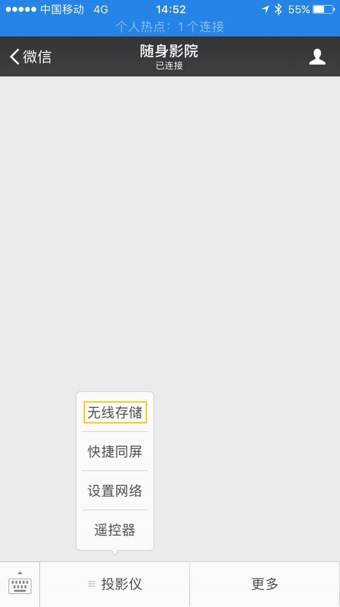
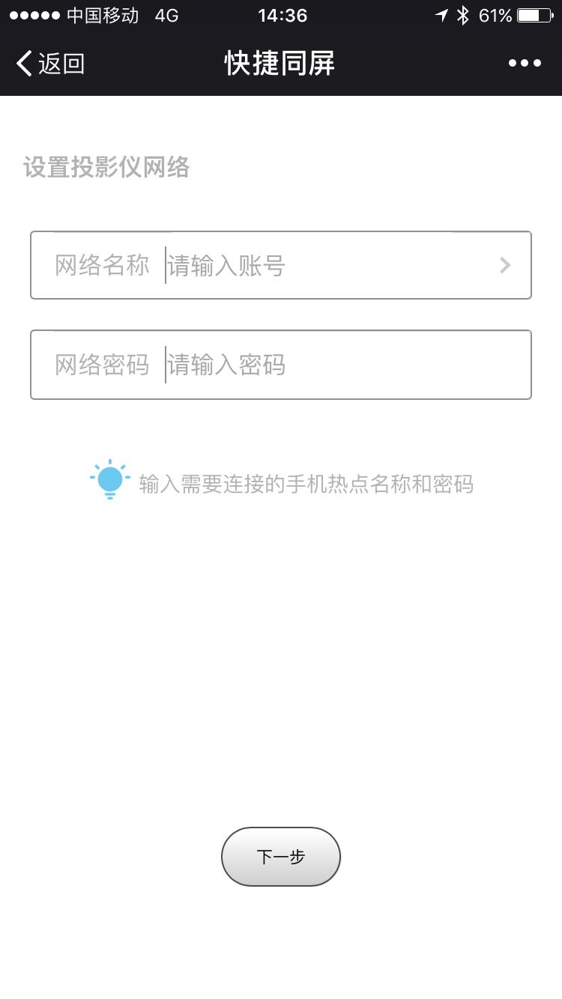
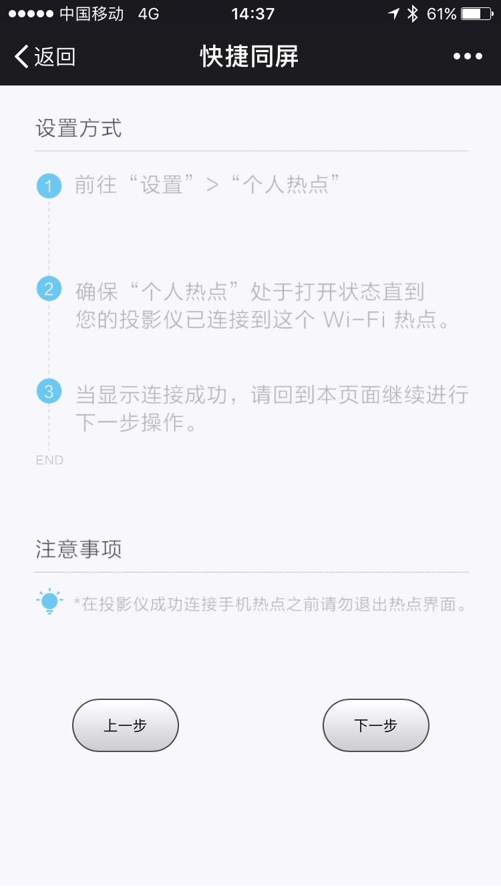
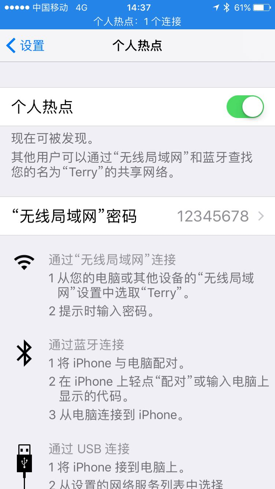
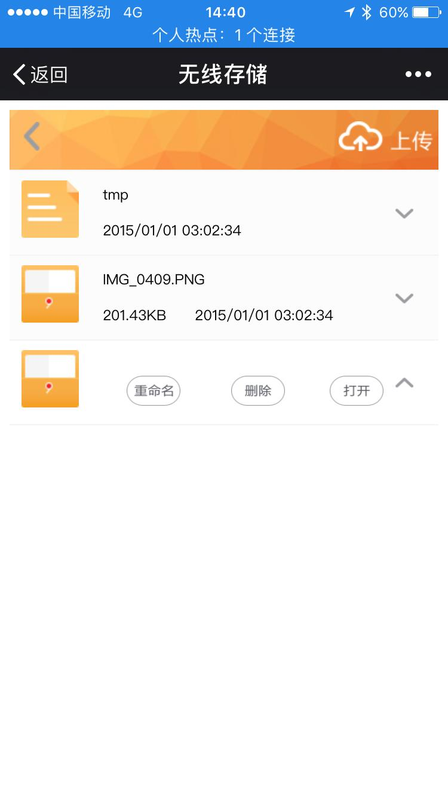

1.功能说明
通过微信可实现手机和投影仪之间的文件互传
（局域网传输，不消耗流量）
2.使用说明
需要将投影仪和手机处在同一局域网内，有如下两种方法：
（1）将投影仪和手机连到同一个WiFi
（用户手动设置成功后，会自动跳过网络设置向导界面）
（2）手机创建WiFi热点，将投影仪连接到该热点上
（网络设置向导使用第二种方法）
3.操作步骤
（1）进入微信公众号，前往“投影仪”->“无线存储”
（2）将WiFi热点的名称和密码设置给投影仪，点击下一步


（3）前往“设置”->“个人热点”，开启热点并停留在此界面等待投影的连接，直到投影仪提示“连接成功”


（4）返回微信“无线存储”界面，点击下一步，可以与投影仪互传文件
